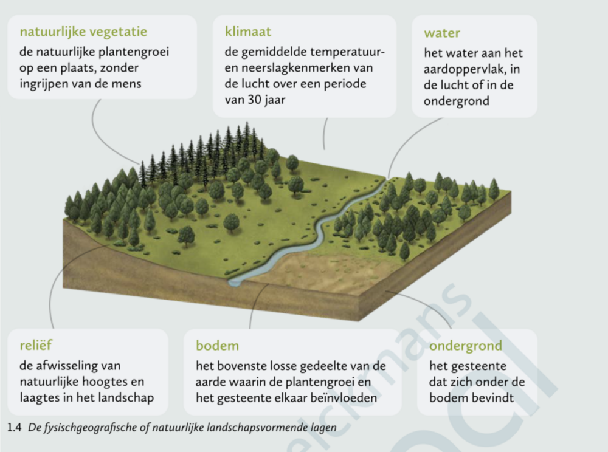

Missielogboek
De belangrijkste ontdekkingen uit dit hoofdstuk, verzameld tijdens de vlucht.
De atmosfeer
De atmosfeer is het mengsel van gassen rond de aarde. Op foto's vanuit het ISS zie je ze als een lichtblauwe, wazige laag. Samen vormen de gassen een beschermende laag: ze houden schadelijke straling van de zon tegen en laten het zichtbare licht door.
Continenten en werelddelen
Vanuit de ruimte zie je vooral blauw: ongeveer 70% van het aardoppervlak is water (oceanen en zeeën), 30% is land. Een continent is een grote aaneengesloten landmassa, niet of nauwelijks verbonden met andere landmassa's. Er zijn vijf continenten: Eurazië, Amerika, Afrika, Antarctica en Australië.
Een werelddeel is een grote landmassa afgescheiden door natuurlijke elementen (oceanen, gebergten, rivieren), inclusief de eilanden errond. Zo behoort Madagaskar tot het werelddeel Afrika, maar niet tot het continent Afrika. Er zijn acht werelddelen: Europa, Noord-Amerika, Centraal- of Midden-Amerika, Zuid-Amerika, Afrika, Azië, Antarctica en Oceanië.
De verschillende kleuren aan het aardoppervlak
Uit de kleuren op een satellietbeeld kan je landschapselementen afleiden:
- Blauw → rivieren, zeeën, oceanen
- Groen → plantengroei
- Geelbruin → woestijnen
- Grijs → bebouwing; in steden zie je veel rechte vormen (straten, kanalen)
- Regelmatige vormen (vierkanten, rechthoeken, cirkels) → landbouwpercelen
's Nachts zie je vanuit het ISS een donkere aardbol met de verlichting van de grote steden.
De fysischgeografische landschapsvormende lagen
Een landschap bestaat uit verschillende lagen die elkaar beïnvloeden. Lagen die door de natuur ontstaan zijn, zonder ingrijpen van de mens, noem je fysischgeografische (of natuurlijke) landschapsvormende lagen. Er zijn er zes:
- Natuurlijke vegetatie: de natuurlijke plantengroei op een plaats, zonder ingrijpen van de mens
- Klimaat: de gemiddelde temperatuur- en neerslagkenmerken van de lucht over een periode van 30 jaar
- Water: het water aan het aardoppervlak, in de lucht of in de ondergrond
- Reliëf: de afwisseling van natuurlijke hoogtes en laagtes in het landschap
- Bodem: het bovenste losse gedeelte van de aarde waarin de plantengroei en het gesteente elkaar beïnvloeden
- Ondergrond: het gesteente dat zich onder de bodem bevindt
Lagen die door de mens gemaakt of veranderd zijn (bv. landbouw, bebouwing, wegen) noem je sociaalgeografische (of menselijke) landschapsvormende lagen. Elke laag die je in dit thema tegenkomt, is dus ofwel fysischgeografisch, ofwel sociaalgeografisch.

De aarde biedt kansen
De bevolking is onregelmatig over de aarde verspreid. De bevolkingsdichtheid geeft weer hoeveel mensen er gemiddeld per km² wonen. De mens woont waar de aarde kansen biedt om te leven, voedsel te produceren en een inkomen te verwerven. Van de zes fysischgeografische landschapsvormende lagen hierboven bekijken we er drie die de bevolkingsspreiding sterk beïnvloeden: klimaat, reliëf en bodem.
- Klimaat: dichtbevolkte gebieden vallen vaak samen met gematigde en warme klimaten waar de temperatuur gunstig is voor landbouw. Warme gebieden met heel veel neerslag (bv. Amazone- en Congorivier) zijn dan weer dunbevolkt: de natuurlijke plantengroei maakt menselijke activiteit moeilijk.
- Reliëf: vlakke gebieden zijn makkelijk te bewerken en bebouwen, en zijn vaak dichtbevolkt. Reliëfrijke gebieden (Alpen, Himalaya) zijn op grote hoogte onbewoond, want het is er te koud. In warme streken trekken hooggelegen gebieden juist bevolking aan omdat het er koeler en aangenamer is (Andes, Burundi, Rwanda).
- Bodem: vruchtbare bodems (bv. leembodems) bieden veel kansen voor landbouw, wat de voedselproductie en dus de bevolkingsdichtheid doet stijgen. Arme, droge of stenige bodems bieden weinig kansen en zijn vaak dunbevolkt.
De mens creëert kansen
Technologische vernieuwingen maken ook minder gunstige gebieden bewoonbaar. Dankzij irrigatietechnieken is de droge Nijlvallei dichtbevolkt. In China worden reliëfrijke gebieden door terrasbouw omgetoverd tot landbouwgrond.
Sinds de 19de eeuw zorgde de industriële revolutie voor technologische vernieuwingen en beter transport. Mensen trokken naar nieuwe gebieden (bv. de oostkust van Noord-Amerika) en naar grondstoffen in Afrika. Handel en transport werden belangrijker, en steden aan de kust groeiden. Daardoor vallen de dichtstbevolkte gebieden vandaag niet meer altijd samen met de vruchtbaarste landbouwstreken.
Geheugenkaarten
Tik op een kaart om ze om te draaien en het antwoord te zien.
Ruimtequiz
Verdien je sterren: hoe meer juiste antwoorden, hoe verder je raket vliegt.
Kaartmissies
Echte satellietbeelden en kaarten uit je handboek. Gebruik je atlas waar nodig.
Samengevat
Als je vanuit de ruimte naar de aarde kijkt, zie je de atmosfeer als een schil rond de aarde. De bevolking woont ongelijk verspreid over de aarde. Van de zes fysischgeografische landschapsvormende lagen beïnvloeden vooral het klimaat, het reliëf en de bodem die spreiding. De mens creëert daarnaast ook zelf bijkomende kansen.